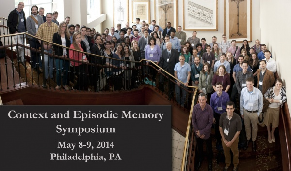

CEMS 2015


The 2015 Context and Episodic Memory Symposium (CEMS), now in its eleventh year, will be held on the campus of the University of Pennsylvania in Philadelphia, PA, on May 7th and 8th, 2015.
The symposium is designed to be a forum for the exchange of ideas among colleagues working on theoretical and empirical approaches to the study of context and episodic memory, broadly construed.
Announcements
We are pleased to announce that Dr John T. Wixted of UC San Diego will be giving the keynote presentation at CEMS 2015!
CONFERENCE REGISTRATION
Registration for the 2015 CEMS conference is now closed. This year there will be two Registration Types for 2015: $200 Non-Faculty and $300 Faculty. These registration fees will cover two days of seminars, breakfast on Thursday and Friday, beverages and small snacks during breaks, and an opening night reception. Hotel reservations can be made by using the Inn at Penn link under "Location & Hotel" below. Please use the conference code ("CEMS") for our group room rate. You will need to register on through this site for the conference, and the Inn at Penn's site for your room(s).
Please click on the PAY NOW button below to pay via PayPal using your account or a valid credit card.
Note: Your PayPal confirmation is your CEMS receipt, and should be used for check-in at the symposium on Thursday, May 7, 2015.
Registration fees will increase $25 after April 24, 2015. Refunds/Cancellations are subject to a 10% cancellation fee. Please email context.symposium@gmail.com if you have any questions.
Your registration is not complete until you've completed the registration form. If you are not redirected to the website immediately after Paypal completion, please click on the 'Computational Memory Lab' link you will see below the Paypal "Successful Payment" message.
ERROR in secure-include.php: could not read the given src URL http://memory.psych.upenn.edu/files/CEMS/cemsButton.html
Location & Hotel
The venue for the 2015 CEMS will be the Inn at Penn, located on the campus of the University of Pennsylvania.
The Inn at Penn is a Four Diamond Hilton hotel, located at 3600 Sansom Street in historic Philadelphia, PA.
More information on the Inn at Penn can be found on their website.
Hotel
In addition to its role as venue for CEMS 2015, the Inn at Penn will serve as the preferred hotel, with group rates negotiated through April 3, 2015 (or until rooms run out). Please book your room(s) in advance of that date to ensure you receive the negotiated rate ($219 per night).
To book your room(s), please follow this link, using the group code: "CEMS".
Click here to view this location on Google Maps
Travel
The University of Pennsylvania is served by Philadelphia International Airport and Amtrak 30th Street Station, and is a short train or taxi ride away from both.
From the Airport
- Towncar
- Uber is a on-demand towncar service that you can summon using an app on your iPhone or Android device, or from m.uber.com, or by texting an address and city to UBR-CAB (827-222).
- Airport flat rate to and from Center City (including Penn campus) is $60 for a towncar (up to 4 people comfortably) or $85 for a luxury SUV (up to 6 people comfortably)
- Normal rates for a towncar are a $7.00 base fare plus $3.75 per mile, or $0.85 per minute of wait time, with a $15 minimum fare. SUV rates are higher.
- Link a credit card to your account. No need to pay your driver directly, and tip is included.
- You must create an account first. Sign up using this CEMS link and receive a $10 bonus credit towards your first ride.
- Taxi
- Taxi fare between Center City Philadelphia (including Penn campus) and the airport is $28.50 each way for one passenger.
- For trips to Center City from the airport, there is an additional $1 fee per passenger. Most cabs hold up to 3 people.
- The trip takes between 15-30 minutes depending on traffic.
- Regional Rail
- The airport is served by SEPTA's Airport Regional Rail line, which stops at each terminal.
- In Center City, you may use either the University City or 30th Street stops on the Airport line.
- University City is a pleasant 0.6 mi walk through Penn's campus, while 30th Street Station is a less-pleasant 0.8 mi, but easier to hail a cab if desired.
- Tickets are $7.00 per person each way.
- The train is scheduled to run every 30 minutes.
- The trip takes 15-20 minutes depending on terminal, and the weekday schedule may be found here.
From 30th Street Station
- The walk from 30th Street Station to the Inn at Penn is roughly 0.8 miles and goes through the campus of Drexel University.
- There is a taxi stand immediately outside the East doors of the station.
- SEPTA's trolley and bus lines connect at 30th Street Station and cost $2.00 (exact change only, or you may buy tokens).
Driving/Parking
- The University of Pennsylvania is close to both I-76 and I-95.
- The Inn at Penn offers valet parking Charge at $39.00 for overnight parking with in and out privileges and 20.00 for daily event parking (prices subject to change).
- Self parking is available at a garage at 38th & Sansom, one block from The Inn At Penn. More garages may be found on this map.
Campus/Surrounding Area
More information about the University of Pennsylvania and its environs will be available soon.
Getting Around
- SEPTA subways, trolleys, and buses run all over Philadelphia.
- Normal base rate is $2.25 cash (exact change only), or a token. More information about fares can be found here.
- You may find a complete system map here. You can also find transit directions on Google Maps.
- Taxis are plentiful.
- Fares are a $2.70 flag drop plus $0.23 per 1/10 mi or 38 seconds of wait time.
- Uber is a on-demand towncar service that you can summon using an app on your iPhone or Android device, or from m.uber.com, or by texting an address and city to UBR-CAB (827-222).
- Normal rates for a towncar are a $7.00 base fare plus $3.75 per mile, or $0.85 per minute of wait time, with a $15 minimum fare. SUV rates are higher.
- Link a credit card to your account. No need to pay your driver directly, and tip is included.
- You must create an account first. Sign up using this CEMS link and receive a $10 bonus credit towards your first ride.
Abstract Submission [NOW CLOSED]
Submit an abstract for consideration to give a spoken presentation at the 11th Annual Context and Episodic Memory Symposium (CEMS) to be held on May 7 and 8, at the University of Pennsylvania in Philadelphia, Pa. The symposium is designed to be a forum for the exchange of ideas among colleagues working on theoretical and empirical approaches to the study of context and episodic memory, broadly construed.
The format of CEMS is to have a relatively small number of spoken presentations each followed by a commentary given by a scientist working on related problems. The program committee aims to identify submissions that highlight major new theoretical and/or empirical advances. Papers not selected for these spoken presentations can be given as poster presentations. In previous years, posters have been a major highlight of the meeting and have been very well attended. The Bennet B. Murdock award will be given for the best poster or spoken presentation by a young investigator, as determined by the committee.
Please email abstract paper submissions to Katherine Hurley (research coordinator of the Computational Memory Lab at the University of Pennsylvania) at context.symposium@gmail.com by Friday, January 23, 2015. We would encourage submission of a written description of work in addition to an abstract if such a description is available.
Information for Presenters
Featured Talks
Full-length: 27-minute talk, followed by up to eight minutes of questions, and a ten-minute commentary.
Intermediate-length: 16-minute talk, followed by up to four minutes of questions.
Please either have slides ready to load onto the presentation computer (a Mac with the latest versions of PowerPoint, Keynote, and Adobe Reader) in the morning before your talk, or bring your own computer, with whatever adapters you will need to output a VGA signal.
We will have the capability to output sound from the computer, but please let us know ahead of time to prepare for that.
Data Blitzes
8 minutes each. Each data blitz presentation will be followed by two minutes for quick questions and changeover. (If you finish early you can take additional questions.)
Posters
We will have easels, foam core boards, and thumbtacks available for poster display. Please limit posters to 40x60" at most.
Schedule
If you are presenting and have scheduling conflicts, please let us know as soon as possible by emailing context.symposium@gmail.com
| Thursday | Friday | ||
|---|---|---|---|
| 8:30 | Breakfast | 8:30 | Breakfast |
| 9:15 | Welcome/Intro | 9:15 | Maria Wimber |
| 9:20 | Donna Bridge | 10:00 | Simon Dennis/PerSederberg |
| 10:05 | Howard Eichenbaum | 10:45 | Break |
| 10:50 | Break | 11:05 | John Dunn |
| 11:10 | Keynote address: John Wixted | 11:25 | Dagmer Zeithamova |
| 12:10 | Lunch/Photo | 11:45 | Stefano Fusi |
| 13:50 | Margaret Schlichting | 12:05 | Lunch |
| 14:10 | Gregory Cox | 13:35 | Simon Hanslmayr |
| 14:30 | Adam Osth | 14:20 | Data Blitzes 2 |
| 14:50 | Geoff Ward | 15:30 | Posters |
| 15:10 | Break | ||
| 15:30 | Karl Healey | ||
| 16:15 | Data Blitzes Session 1 | ||
| 17:05 | Reception & Posters | ||
List of featured spoken presentations
First author will be presenting unless otherwise noted. Each full-length presentation will feature a discussant
- Keynote Presentation: Dr. John Wixted, Professor of Psychology, University of California San Diego
Full-length Presentations (45-minutes, including Q&A session and Discussant talk)
- Donna J. Bridge, Joel L. Voss (Northwestern University): How are episodic memories structured?
- Discussant: Kenneth Norman, Princeton University
- Howard Eichenbaum, Sam McKenzie, Andrea Frank, Nathaniel Kinsky, Blake Porter, Pamela Riviere (Boston University, Cardiff University): How the hippocampus organizes memories in context
- Discussant: Rosie Cowell, University of Massachusetts, Amherst
- M. Karl Healey, Michael J. Kahana (University of Pennsylvania): A new approach to understanding age–related memory impairment
- Discussant: Lili Sahakyan, University of North Carolina, Greensboro
- Maria Wimber, Arjen Alink, Ian Charest, Nikolaus Kriegeskorte, Michael C. Anderson (University of Birmingham): Repeated retrieval causes adaptive forgetting by gradually suppressing the unique patterns representing competing memory traces
- Discussant: David Huber, University of Massachusetts, Amherst
- Vishnu Sreekumar, Simon Dennis (presenting), Per Sederberg (Ohio State University, University of Newcastle): Using experience sampling to study context in the wild
- Discussant: Pernille Hemmer, Rutgers University
- Sebastian Michelmann, Howard Bowman, Simon Hanslmayr (presenting) (University of Birmingham, University of Kent): Reinstatement of dynamic memory trajectories in the visual and auditory domain – Towards a mental chronometry of memory replay
- Discussant: Michael J. Kahana, University of Pennsylvania
Intermediate-length Presentations (20 minutes, including Q&A session)
- Margaret L. Schlichting, Jeanette A. Mumford, Alison R. Preston (University of Texas): Learned item representations reveal dissociable integration and separation signatures in medial prefrontal cortex and medial temporal lobe
- Gregory E. Cox, Richard M. Shiffrin, Amy H. Criss (University of Indiana): A Dynamic Approach to Item and Associative Recognition
- Adam F. Osth, Simon Dennis (University of Newcastle): Sources of interference in item and associative recognition memory
- Geoff Ward, Sarah Owusu, Lydia Tan, Rachel Grenfell-Essam (University of California, Irvine): A re-examination of IFR as a 'two- component task': the case of word frequency at different list lengths
- John C. Dunn, Rachel Stephens, Christopher Keech (University of Adelaide): A test of differentiation and criterion shift accounts of the strength-based mirror effect
- Dagmer Zeithamova, Bernard Gleman, Alison Preston (University of Oregon, University of Texas): Reward representation in the midbrain and hippocampus during motivated encoding
- Marcus Benna, Stefano Fusi (presenting) (Columbia University): Computational principles of synaptic memory
Data Blitz Sessions
If you are presenting and have schedule conflicts, please let us know by emailing context.symposium@gmail.com as soon as possible.
Thursday
- Nicole Long, Michael J. Kahana : Contextual encoding mechanisms in hippocampus and left lateral cortex support successful memory
- Lynn J. Lohnas, Marijke Beulen, Joshua Jacobs, Michael J. Kahana, Endel Tulving : Memory encoding causes neural fatigue in the human hippocampus
- Asaf Gilboa : Intrinsic recollection-like processes support semantic memory recognition by reinstating 'semantic context'
- Lili Sahakyan : Age-related differences in context processing
- A.C. Heusser, Lila Davachi : Dynamics in theta-gamma cross-frequency coupling predict successful temporal order memory within episodic events
Friday
- Megan deBettencourt, Nicholas Turk-Browne, Kenneth Norman : Using real-time fMRI neurofeedback to manipulate mental context
- Asieh Zadbood, Yuan-Chang Leong, Janice Chen, Uri Hasson : Differentiation of neural patterns for novel vs. repeated narrative content
- L.A. Libby, M.C Inhoff, B.C. Love, C. Ranganath : Learning contextual significance in the medial temporal lobe
- Ida Momennejad, Jonathan Cohen, Kenneth Norman : How does imagining goal-related future episodes enhance propsective memory
- Jessica Robin, Luisa Garzon, Morris Moscovitch : Spontaneous memory retrieval in response to real-world spatial contextual cues
- J.H. Wittig, Jr., R.Ellenbogen, S.Inati, K.Zaghloul : Human intracranial EEG reveals a distinct time course of cortical activation during proactive versus retroactive attention-enhanced memorization
- Y. Yeshurun, S.Swanson, J.Chen, CJ Honey, C.Lazaridi, U. Hasson : Same story, different story-- Neural representation of context-dependent theory of mind
Poster Presentations
If you are presenting and have schedule conflicts, please let us know by emailing context.symposium@gmail.com as soon as possible.
Thursday
- Kylie H. Alm, Ashley Unger, Tehila Nugiel, Hyden R. Zhang, Tyler M. Rolheiser, Vanessa Troiani, & Ingrid R. Olson:Frontal White Matter Connectivity Predicts Variability in Associative Learning and Delayed Retrieval.
- Mariam Aly and Nicholas B. Turk-Browne:"Hippocampal representations of attentional state predict the formation of episodic memory"
- Verena Braun, Jess Kerlin, Simon Hanslmayr :"Entrainment of prefrontal beta oscillations by tACS modulates memory formation
- Suyog Chandramouli, William Kronenberge & David Pisoni :"Performance of Prelingually Deaf Adult Cochlear-Implant Users on California Verbal Learning Test-II: Some Preliminary Findings"
- Avi J.H. Chanales and Brice A. Kuhl: "Hippocampal Activity Patterns Differentiate Between Overlapping Routes"
- J.DiLascio, P.Sederberg & M. Howard :"Modeling Semantic Transitions in Free Recall"
- Sarah DuBrow, Brynn Sherman & Lila Davachi: "Opposing influences of event boundaries on judgments of time"
- Chad J. Gossett, Adam E. Hasinski, Per B. Sederberg: "Electrophysiological Correlates of the Context Repetition Effect"
- Benjamin J. Griffiths, Simon HansImayr: "The relative importance of spatial and temporal context for episodic memory in real world environments"
- Hebscher, M., Abramski, M., Goldsmith, M., Aharon-Peretz, J., Gilboa, A.: "Memory, decision-making and the ventromedial prefrontal cortex (vmPFC): The roles of subcallosal and posterior orbitofrontal cortices in monitoring and control processes "
- Pernille Hemmer and Kimele Persaud: "Episodic Memory across Cultures: From Students in the US to the Tsimane’ People of Bolivia"
- William J. Hopper, David E. Huber: "The Short-Term Cost of Retrieval Failure"
- K. Kato and J. Caplan: "Do association-memories include constituent-order?"
- Ghootae Kim, Kenneth A. Norman, & Nicholas B. Turk-Browne: "How context memories are updated based on competition"
Friday
- James E. Kragel and Sean M. Polyn: "Large-scale network activity predicts the maintenance and retrieval of contextual information in memory"
- Lynn J. Lohnas, Katherine Duncan, Thomas Thesen, Orrin Devinsky, Lila Davachi : "Mnemonic processing in hippocampus and dorsolateral prefrontal cortex"
- Michael Mack, Bradley Love & Alison Preston: " The evolution of category knowledge: Linking learning models to the dynamics of neural representations"
- Christopher R. Madan: "Adaptive memory: Considering the functional role of memory"
- Neal W Morton and Sean M. Polyn: "A predictive framework for evaluating models of semantic organization in free recall"
- Dylan M. Nielson, Per B. Sederberg: "MELD: Mixed Effects for Large Datasets"
- Patrick Sadil, David Huber, Rosie Cowell: " Visual Recollection"
- Sekeres, M.J.,McKelvey, K., St.Laurent, M., Pishdadian, S., Winocur, G., Grady, C., Moscovitch, M.: "Time-dependent transformation of complex memory episodes: rescuing and preventing loss of memory for detail"
- Brian M. Siefke, Per B. Sederberg :"Violations of visual rhythm enhance subsequent memory for words"
- Inder Singh, Aude Oliva, Marc Howard : "Visual memories are stored on a Weber-Fechner timeline"
- Vishnu Sreekumar, Simon Dennis, Per Sederberg: "Hierarchical Bayesian analysis of a week discrimination task: A simple explanation for a complex real-world memory pattern.”
- G. Ward and C.Cinel: "RECALL: Retrieval-induce forgetting in the real world"
- Emily R. Weichart, Dylan M. Nielson, Per B. Sederberg: "Inter-subject correlation in theta and gamma spectral power predicts memory for details of scientific talks"
- Jamal A. Williams, Ida Momennejad, Jonathan D. Cohen, Kenneth A. Norman :"Taking the same pill twice: the role of context reinstatement in commission errors"
Past Symposia
For information about previous years' CEMS, please click here.